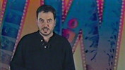
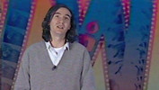
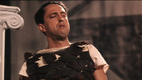
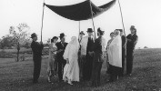
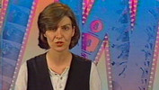
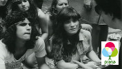
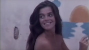
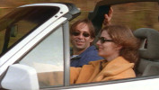
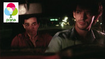

Curta na TV
|
CURTA NA TV (Betacam, 24 x 30 min, cor, 1997-98) (janela 1.33, som mono) |
| Uma janela na televisão para o curta brasileiro. Em cada programa, um filme de curta-metragem é exibido na íntegra, mas antes disso é apresentado e contextualizado por uma reportagem inédita sobre seu realizador, sua temática, suas conseqüências artísticas e sociais. |
|
Roteiro e Direção: Ana Luiza Azevedo
Produção Executiva: Nora Goulart e Luciana Tomasi
Assistente de Direção e Pesquisa: Amábile Rocha
Arte: Fiapo Barth
Coordenação de produção TVCOM: Marlise Aúde
Produção: TV COM
Realização: Casa de Cinema de Porto Alegre
EPISÓDIOS
|  |
01 - O Dia em que Dorival encarou a guarda exibido em 10/08/1997 |
|  |
02 - Deus ex-machina exibido em 17/08/1997 |
|
03 - Barbosa exibido em 24/08/1997 |
|
04 - O Zeppelin passou por aqui exibido em 31/08/1997 |
|  |
05 - Um Homem sério exibido em 07/09/1997 |
|
06 - O Reino azul exibido em 14/09/1997 |
 |
07 - A Matadeira exibido em 21/09/1997 |
|  |
08 - Mazel tov exibido em 28/09/1997 |
|  |
09 - A Morte no Edifício Império exibido em 25/01/1998 |
 |
10 - Esta não é a sua vida exibido em 01/02/1998 |
|
11 - Sonho exibido em 08/02/1998 |
|
12 - Memória exibido em 15/02/1998 |
 |
13 - Festa de casamento exibido em 22/02/1998 |
|
14 - A Pequena vida das pessoas grandes exibido em 01/03/1998 |
|
15 - Ilha das flores exibido em 08/03/1998 |
|
16 - Angelo anda sumido exibido em 15/03/1998 |
|
17 - Batalha naval exibido em 22/03/1998 |
|
18 - Núcleo de animação exibido em 19/03/1998 |
|  |
19 - No amor exibido em 05/04/1998 |
|  |
20 - Grafite exibido em 12/04/1998 |
|  |
21 - Estrada exibido em 19/04/1998 |
 |
22 - A Coisa mais importante da vida exibido em 26/04/1998 |
|  |
23 - Passageiros exibido em 03/05/1998 |
|
24 - Filmes experimentais exibido em 10/05/1998 |